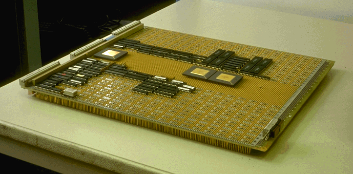

press x to close

|
Je suis encore chercheur associé au Département Informatique à TÉLÉCOM Bretagne. même si je suis plus souvent à Los Altos en Californie. |
I am co-founder and CSO of SILKAN since 2008 where we develop high-end simulators of whole systems, hardware accelerators, parallel programming tools and other funny stuff such as parallelizers for various platforms such as weird low power embedded systems or GPU, or hack for profit.
Even if I'm more often in Los Altos, California, I am still associated assistant professor at the Laboratory of Computer Science in TÉLÉCOM Bretagne to pressure few PhD students and interns. |
Je propose des sujets de thèse et MR2 ! Are you fool enough to suffer a PhD thesis with me? :-)
|
|
0x3D2A57E7), empreinte/fingerprint : 0D75 64F1 BB4C 6AF2 7D8F 67B1 D559 B301 3D2A 57E7
« Tout le monde connaît l'utilité de l'utile mais rares sont ceux qui savent l'utilité de l'inutile. »
Zhuangzi (taoïste du 4ème siècle avant JC), Le monde des hommes, chapitre 4.

